DV-CQ-006 · Aprovar, emitir e corrigir resultado não deixam histórico: a consulta de log vem vazia ou só mostra a inclusão
Depois de **aprovar, emitir o laudo e atualizar** a 017/26, o log da solicitação mostra **só a inclusão** feita pelo Estoque (22/10 e 23/10, sem os atos do CQ) e o log da análise diz **"NÃO EXISTE LOG DE ALTERAÇÃO PARA ESTE REGISTRO."** Na 018/26, o teor foi corrigido de 120 para 100 pela Emissão Laudo Final: a tela exigiu justificativa e disse "Alteração efetuada com sucesso.", o valor mudou, mas o log do ensaio também respondeu "NÃO EXISTE LOG DE ALTERAÇÃO PARA ESTE REGISTRO." (as duas linhas do ensaio). Quem aprovou e quem reprovou não é gravado.
Como reproduzir o erro, passo a passo
- Aprovar, emitir e atualizar uma análise; clicar no ícone Log da solicitação e da análise.
- Em Emissão Laudo Final › Anterior, corrigir o teor de um ensaio (lápis), informar a justificativa e salvar; abrir o ícone Log do ensaio.
Esperado
Cada decisão e cada correção com usuário, data, valor antigo, valor novo e justificativa.
Obtido
Log vazio ou só com a inclusão.
Evidência (captura da tela)
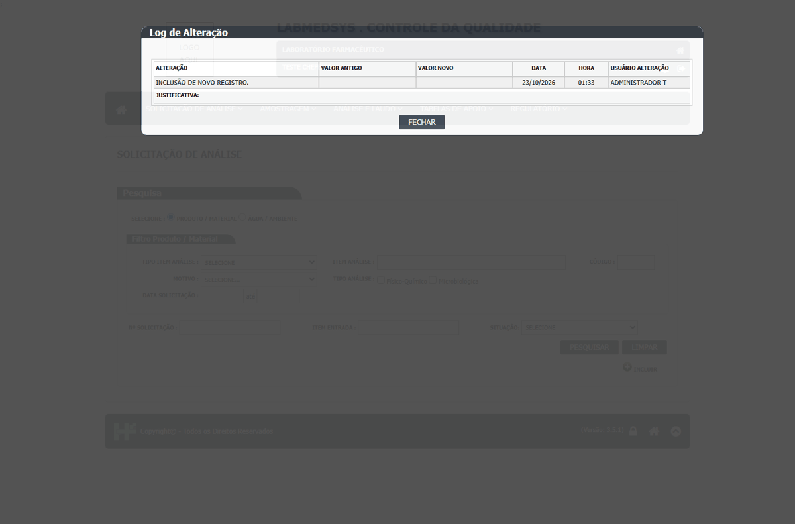
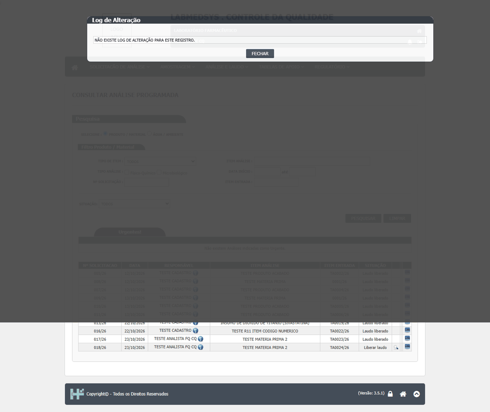
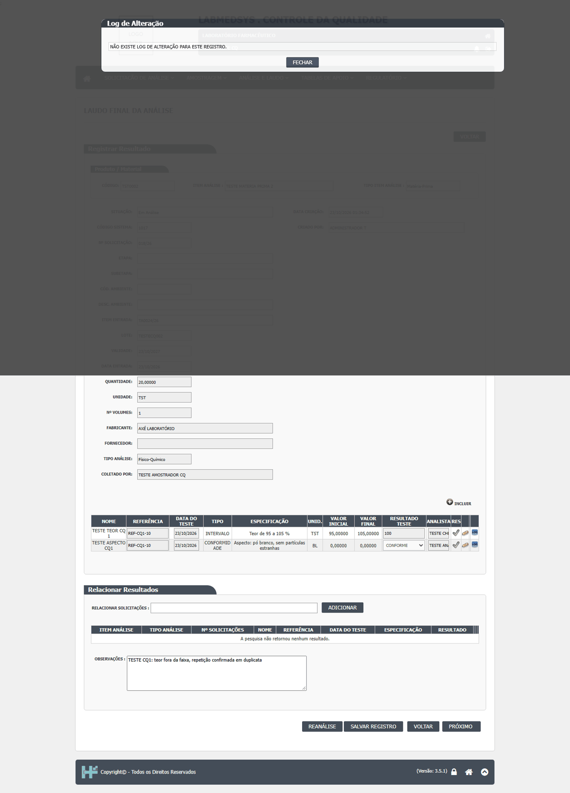
DV-CQ-009 · Ambiente e água: a digitação diz "Alteração efetuada com sucesso." mas não grava o resultado, e o laudo oferece só Aprovar
Na análise de ambiente da sala PRD-PES-01 (024/26), foram digitados **150 UFC** (limite 100) e **NÃO CONFORME**, com referência e data. A tela mostrou "Alteração efetuada com sucesso."; ao reabrir, **referência, data e resultado estão vazios** e só a observação ficou. A análise saiu da lista do analista e, na Emissão Laudo Final, ficou só o botão **Aprovar** (sem Reprovar). Repetido uma segunda vez, com o mesmo resultado. O boletim de ambiente impresso sai com a coluna Resultado em branco.
Como reproduzir o erro, passo a passo
- Registrar a amostragem de uma solicitação de ambiente e programar a análise (analista microbiológico).
- Em Consultar Análise Programada, abrir a análise, preencher referência, data e resultado dos dois ensaios e Salvar Registro.
- Abrir a análise de novo e conferir os campos.
Esperado
Gravar o resultado digitado e, estando fora do limite, oferecer Reprovar.
Obtido
Resultado perdido, mensagem de sucesso, laudo com Aprovar.
Evidência (captura da tela)
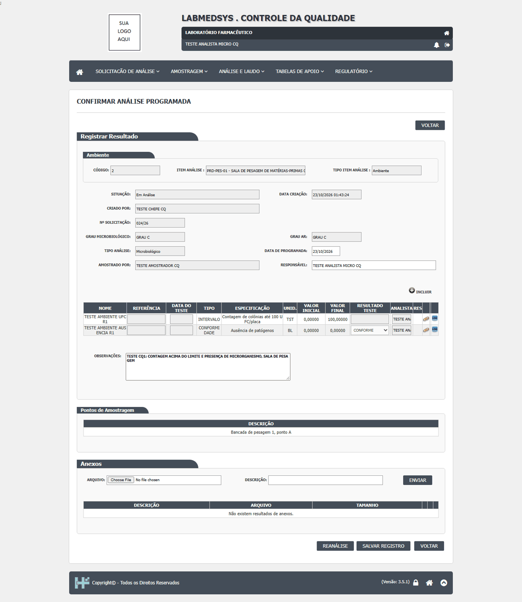
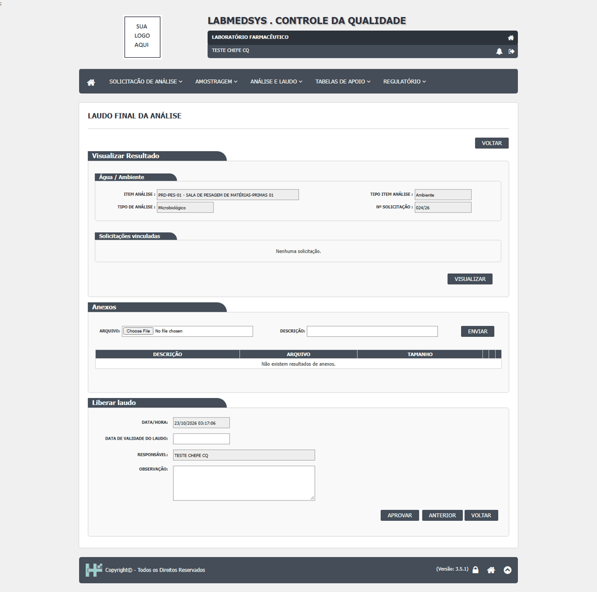
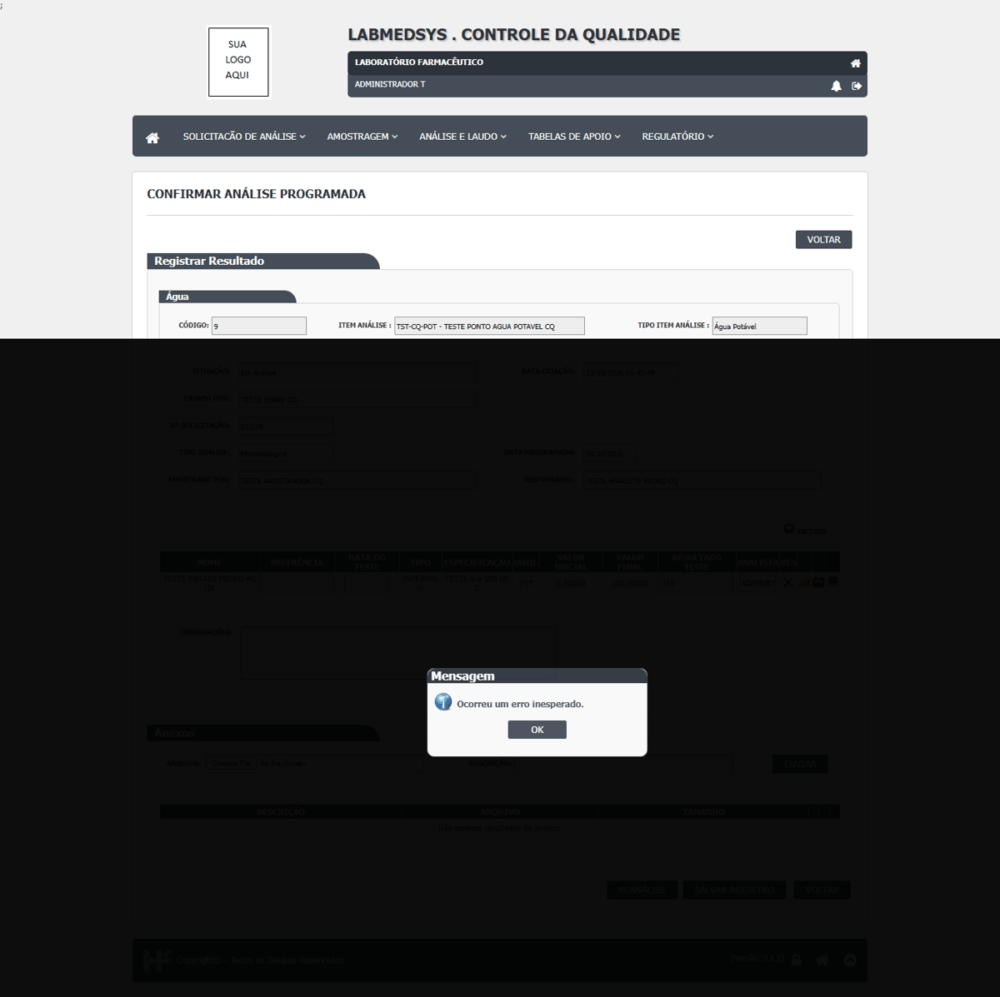
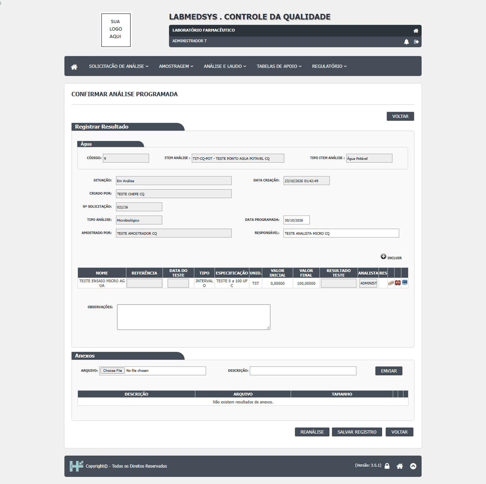
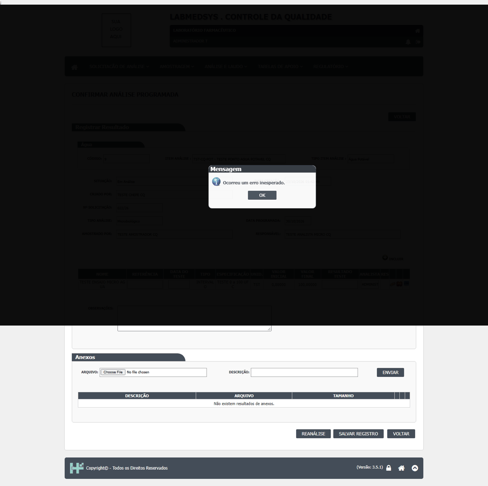
DV-CQ-035 · Perfil só de consulta grava a análise programada de outro analista
Pela visão de administrador, o usuário só de consulta abriu a digitação da análise 024/26 (analista TESTE ANALISTA MICRO CQ) e o "Salvar Registro" foi aceito. A edição dos valores não foi exercitada (o ícone de editar não liberou os campos para o robô); a gravação do registro, sim. A visão de administrador é ligada por um parâmetro do endereço (SEG-CQ-02).
Como reproduzir o erro, passo a passo
- Entrar com o perfil só de consulta.
- Abrir Consultar Análise Programada Visão Administrador, pesquisar ambiente, Confirmar a 024/26 e clicar em Salvar Registro.
Esperado
Recusar a gravação (e esconder o botão) para um perfil que só tem a consulta da tela; registrar a tentativa.
Obtido
"Confirma alteração do item?" e "Alteração efetuada com sucesso."
Evidência (captura da tela)
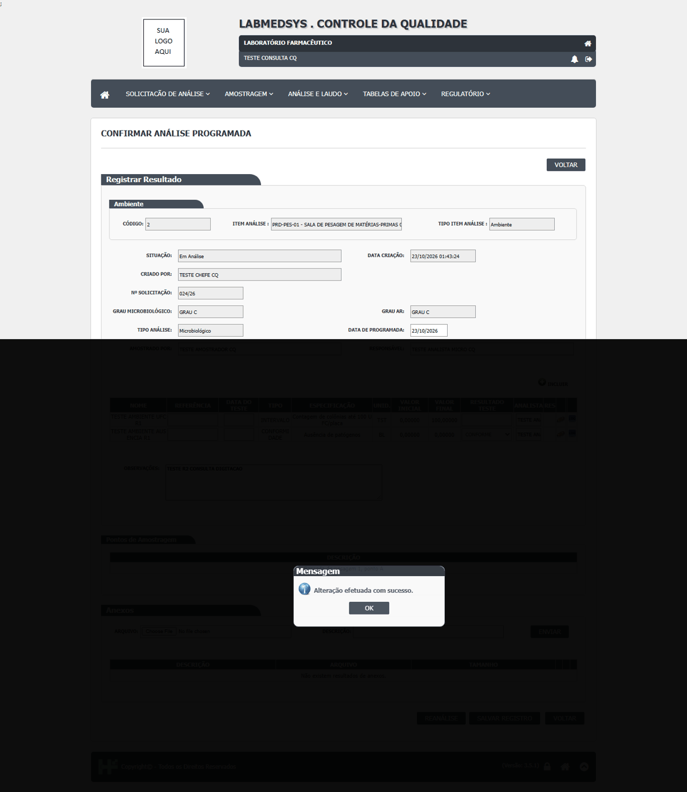
DV-CQ-038 · Programação de Análise aceita solicitação cancelada e cria uma análise já "Laudo liberado"
A solicitação 016/26, **cancelada** na rodada 1 depois de ter laudo liberado (DV-CQ-007), continuava na lista de pendentes de programação de análise. Programada (data e analista), gerou uma análise **nova** que já aparece como "Laudo liberado" na visão de administrador, sem ninguém ter digitado nem aprovado nada. *Inferência:* a lista de pendentes não filtra a situação da solicitação e a análise nova herda a situação da anterior.
Como reproduzir o erro, passo a passo
- Cancelar uma solicitação que já teve laudo liberado (DV-CQ-007).
- Abrir Programação de Análise e pesquisar: a solicitação cancelada aparece.
- Editar, informar data e analista, Salvar.
- Abrir Consultar Análise Programada Visão Administrador: a análise nova aparece como Laudo liberado.
Esperado
Solicitação cancelada não pode ser programada; uma análise nova nasce Pendente de digitação.
Obtido
"Alteração efetuada com sucesso."; análise nova com data 28/10/2026 e situação Laudo liberado.
Evidência (captura da tela)

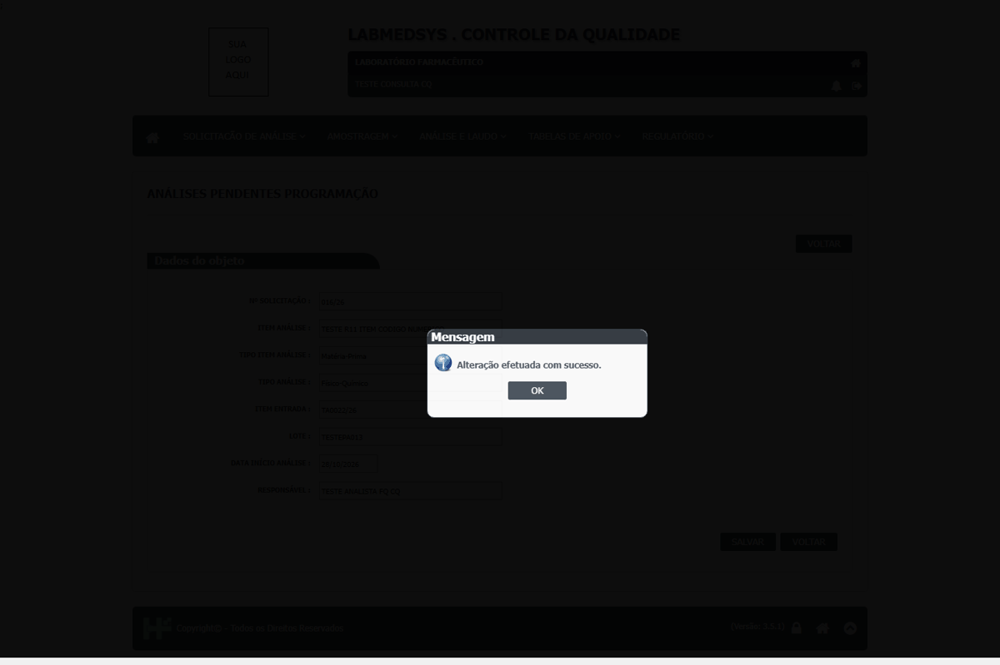
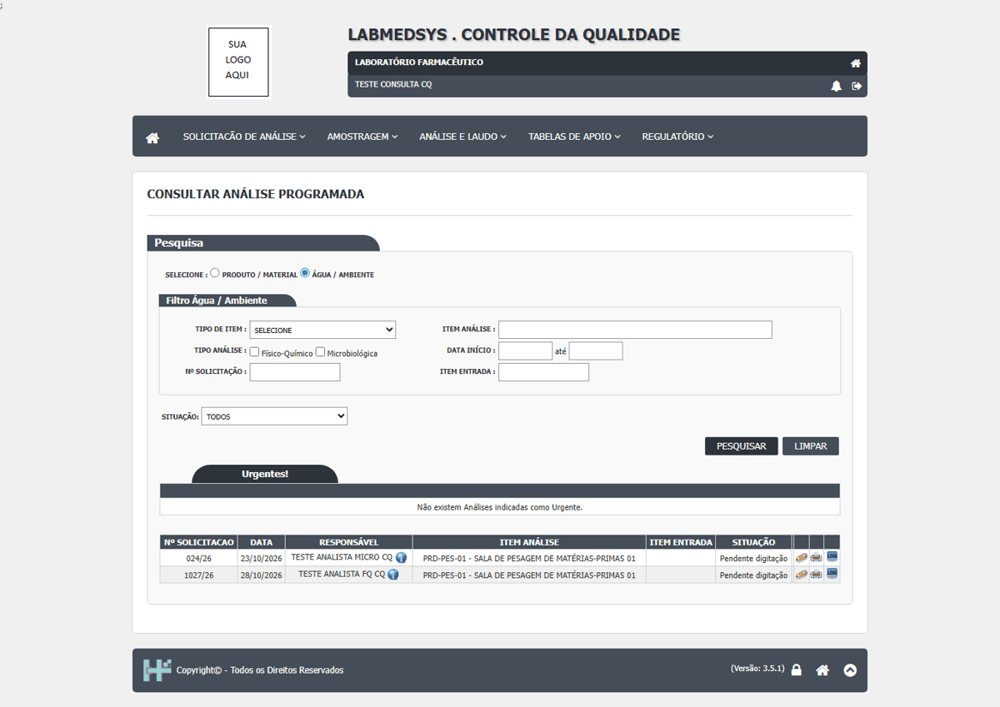
DV-CQ-044 · Nas listas com duas páginas (Consultar Análise Programada visão administrador e Emissão Laudo Final) a segunda página repete linhas da primeira
Com os filtros vazios, as duas listas mostram 14 linhas na página 1 e 11 na página 2 (25 no total), mas só **21 linhas diferentes**: quatro análises (005/26, 019/26, 014/26 e 006/26) aparecem **nas duas páginas**. A paginação não é estável, então quem percorre as páginas vê linhas em duplicidade e pode deixar de ver outras. Fora isso, os filtros de número, item de entrada, item pela lista de sugestões, tipo do item, tipo de análise, situação e período devolvem exatamente as linhas esperadas.
Como reproduzir o erro, passo a passo
- Abrir Consultar Análise Programada (visão administrador) ou Emissão Laudo Final.
- Pesquisar sem filtro.
- Comparar as linhas da página 1 com as da página 2.
Esperado
Cada análise em uma só página, na mesma ordem em todas as consultas.
Obtido
Quatro análises repetidas entre as páginas.
Evidência (captura da tela)
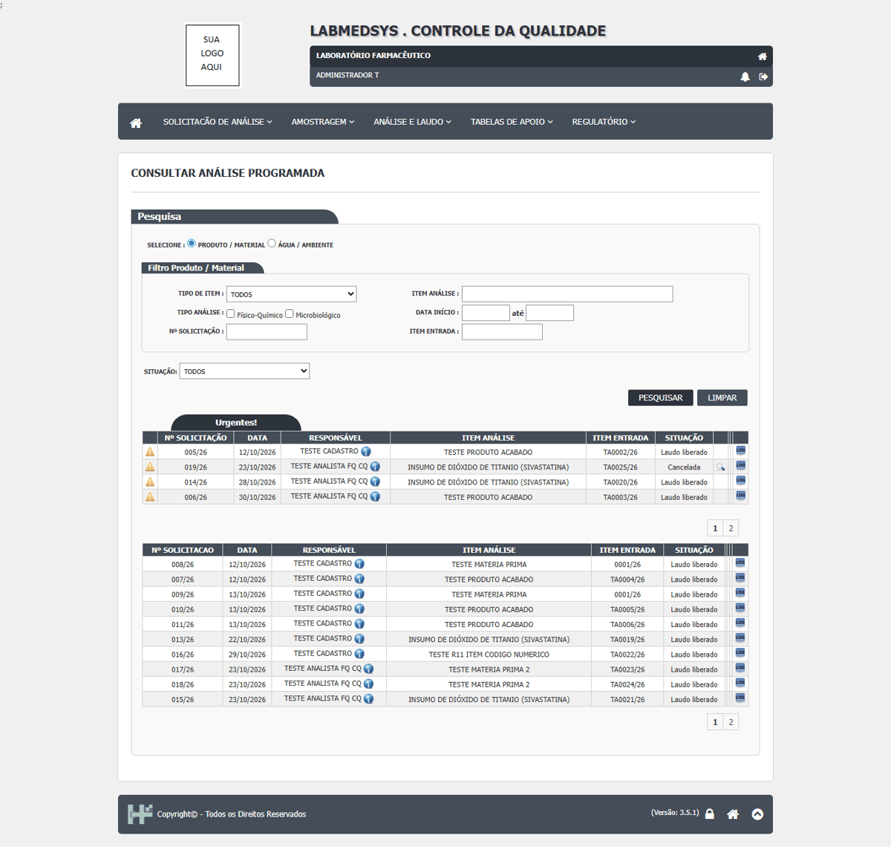
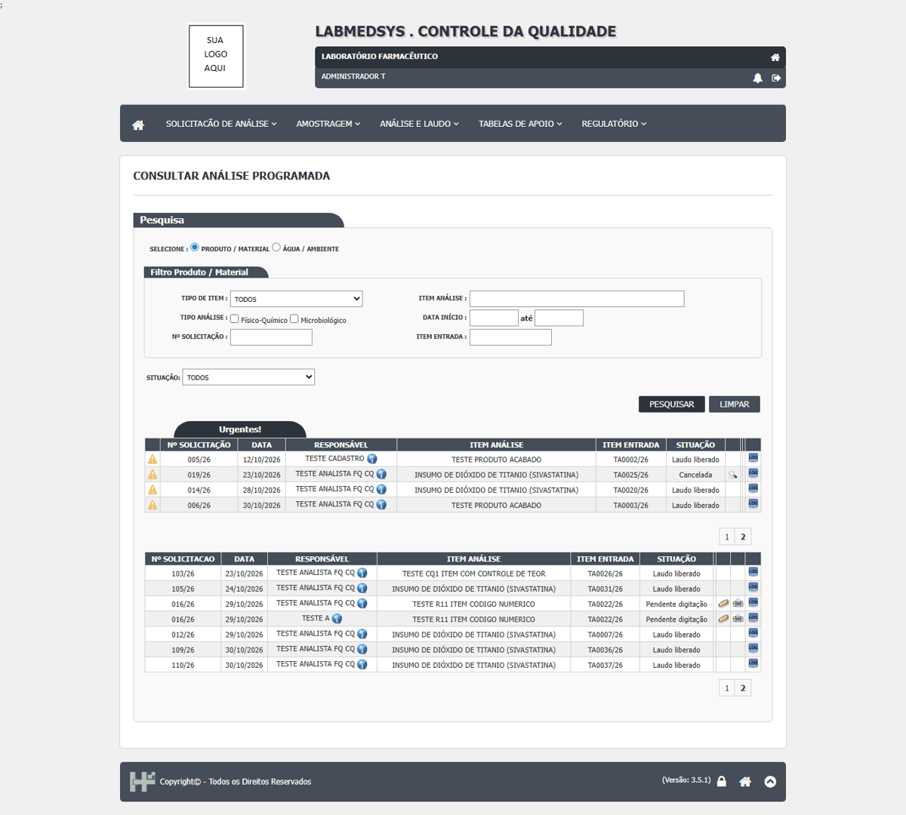
DV-CQ-025 · Relatórios: a etiqueta traz o nome de outra instituição, as datas saem em dois formatos e o boletim de ambiente sai em branco
A **etiqueta** (017/26) tem no alto "LABORATÓRIO QUÍMICO FARMACÊUTICO DA AERONÁUTICA", e o laudo e o boletim dizem "Laboratório Farmacêutico". O **laudo** traz "Validade Laudo: 23/10/2027" e, na mesma folha, "Validade: 10/23/2027" (data americana); o boletim também imprime a data de hoje como "10/23/2026 3:24:50 AM". O **boletim de ambiente** sai com "Data da exposição", "Ambiente avaliado", método, tempo, meios de cultura e as quatro condições (sala vazia, fluxo ligado, ar ligado, sala em atividade) **em branco**, para preencher a mão; a coluna Resultado também sai vazia (DV-CQ-009). A etiqueta com "Teor: 0.000" mostra o teor mesmo quando não é obrigatório.
Como reproduzir o erro, passo a passo
- Em Gerar Etiqueta, clicar no ícone de uma análise com laudo, informar a quantidade 2 e Imprimir.
- Em Emissão Laudo Final, clicar em Imprimir; em Consultar Análise Programada, imprimir uma análise de ambiente.
Esperado
Nome da instituição correto e igual nos documentos; data no mesmo formato; boletim com os dados da coleta.
Obtido
Nome de outra instituição, dois formatos de data e boletim sem dados.
Evidência (captura da tela)
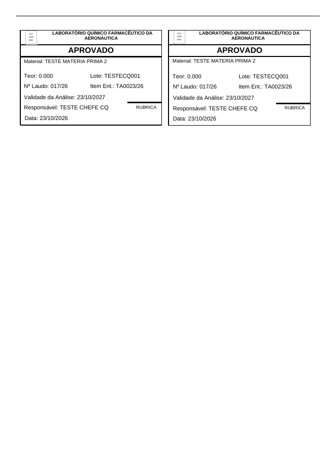
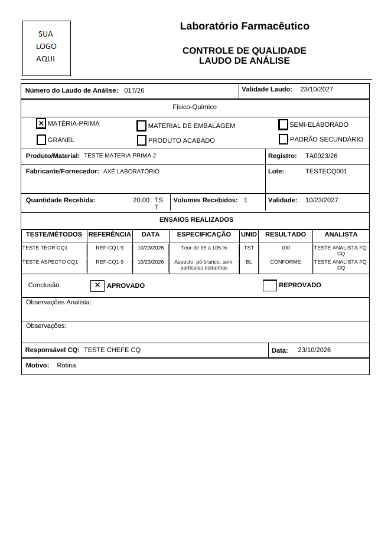
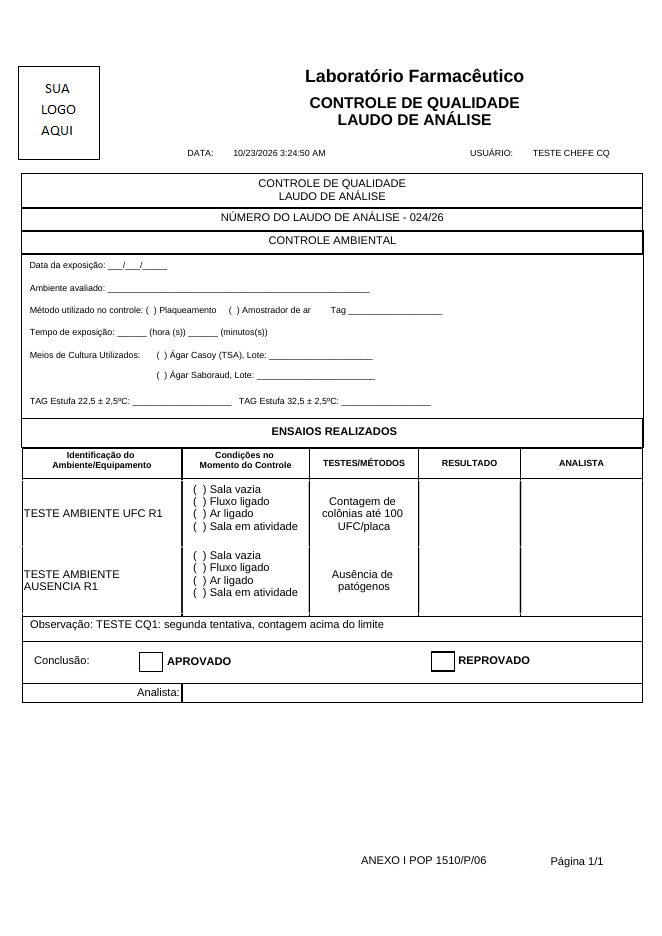